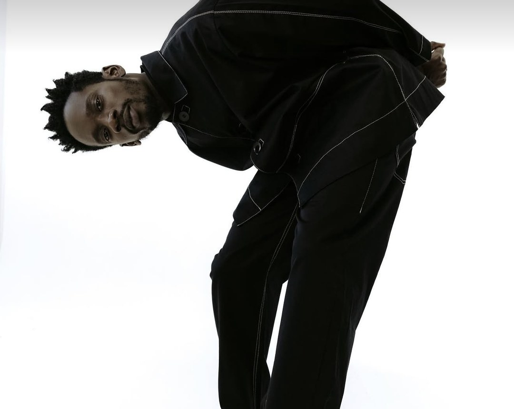
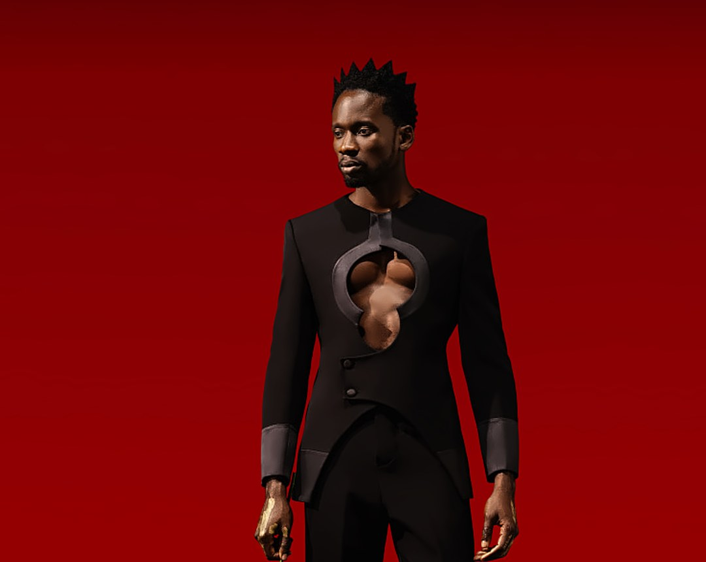

Mr Eazi: singer, investor, owner
The Afrobeats star has spent a decade building something bigger than a music career. Here are the seven moves that turned Oluwatosin Ajibade into one of African entertainment's most serious businessmen.

Most artists diversify once the money from music starts coming in. Mr Eazi did it the other way round. Before he had a hit, he had a business, and long after the hits, the businesses have kept growing. Today he chairs a gaming group operating across more than ten African countries, sits on the board of a payments company that has processed more than a billion transactions, and is openly talking about taking a company public on the Nigerian Exchange.
Here is how he got there, one move at a time.
Move 01Start with the hustle
Oluwatosin Ajibade was born in Port Harcourt in July 1991 and moved to Ghana at 16 to study mechanical engineering at the Kwame Nkrumah University of Science and Technology (KNUST) in Kumasi. Music wasn't the plan. Events were. On campus he ran a party and promotions outfit called Swagger Entertainment, booking artists to perform at student parties.
It taught him the business side of entertainment the hard way. In 2014, after an artist failed to show up for the biggest party he had ever put together, he walked away from club promotion. By then he had started recording himself, after a guest verse on a song called “My Life” became a campus favourite. “Skin Tight” with Efya followed in 2015 and took him international, and “Leg Over” in late 2016 made him one of the faces of the new Afrobeats wave.

Move 02Turn a sponsor into a business
His most important business relationship started in 2017, when he came in as an investor in betPawa, the sports betting brand founded by Danish entrepreneur Kresten Buch. For years he was also the face of its advertising. But the real move came later, when he went from promoting the brand to operating it.
His company, Choplife Gaming, which he chairs, now runs betPawa under licence from its technology owner, pawaTech. In January 2025 Choplife signed a four-year deal for the betPawa rights in Nigeria, adding Africa's most populous country to markets it already ran, including Ghana, Uganda, Tanzania, Rwanda and Benin. It has also built brands of its own: in April 2024 it launched Choplife.ci, an online betting and casino platform in Côte d’Ivoire.
Move 03Build your own investment arm
In 2021 he set up Zagadat Capital, an investment vehicle named after one of his catchphrases. One of its first cheques went into pawaPay, a mobile money payments company spun out of the betPawa business, as part of a $9 million seed round. Mr Eazi joined pawaPay's board, and the company has since crossed one billion transactions, a milestone it reached in under three and a half years.
Zagadat is not just a tech fund. As you'll see further down, it has started taking positions in companies on the stock market too.
Move 04Invest in the next generation
emPawa Africa, the artist incubator he launched in 2019, was built to give young artists the kind of backing that is hard to find early in a career. Its first big programme, emPawa100, picked 100 emerging African artists from thousands of online submissions and paid for each one's music video, at $3,000 per artist. The top ten went to a three-week mentorship camp in Cape Town.
One of the names in that first class was Joeboy, then an unsigned Lagos singer whose cover of Ed Sheeran's “Shape of You” had caught Mr Eazi's attention. “Baby” followed, and Joeboy became one of the biggest new voices in Nigerian pop. emPawa has since grown into a full music services company, handling distribution, publishing and marketing for artists across the continent.
Move 05Own the stage
Detty Rave, his year-end concert in Accra, has become one of the fixed dates of Ghana's December season. At the seventh edition, on 27 December 2025, he used his headline set to make a pledge: $2 million to build a proper outdoor rave yard and a 3,000-capacity indoor venue in Accra, on condition that the Ghana Tourism Authority provides the land.
It's a move aimed at a real gap. He has pointed out that African cities lack good mid-sized venues, the 250 to 1,000-capacity rooms where most artists actually build their audiences, and that arena shows are the exception, not the rule. Owning the venue means owning a piece of every show that plays in it.

Move 06Put money where it matters
In May 2026, Zagadat Capital's Ghana arm disclosed that it had bought 17.31% of Intravenous Infusions PLC, a Ghanaian manufacturer of IV fluids and other pharmaceutical products listed on the Ghana Alternative Exchange. The stake, more than 47.5 million shares, was bought on the open market.
Zagadat described it as a long-term investment in Ghana's healthcare and drug manufacturing sector and said it had no plans to take over the company. It's a long way from betting and Afrobeats, and that's the point.
Move 07The next move: the stock exchange
In an August 2026 interview with Nairametrics, he said he would like to list a technology company on the Nigerian Exchange when the time is right. Asked whether that could be Choplife, he said yes in principle, but that there is a sequence to these things and he is only at the beginning of the process. He named Aliko Dangote, Abdul Samad Rabiu and Femi Otedola, who is also his father-in-law, as the example he wants to follow: build big at home, then let Nigerians own a piece of it.
No date, no company name, no valuation yet. But for an artist who started out booking acts for campus parties, even saying it out loud is a statement.
Sources
- Wikipedia: Mr Eazi
- GhanaWeb: Mr Eazi biography
- ThisDay: Choplife Gaming's betPawa Nigeria deal (Jan 2025)
- Billionaires.Africa: pawaTech 2025 results (Oct 2026)
- Music In Africa: Choplife.ci launch (Apr 2024)
- Rest of World: Mr Eazi the tech investor
- ThisDay: Zagadat Capital and pawaPay (Sep 2021)
- The Will: pawaPay passes one billion transactions
- Rolling Stone: emPawa and Joeboy
- Graphic Online: Detty Rave $2m venue pledge
- AllAfrica: Detty Rave 7
- Graphic Online: Zagadat stake in Intravenous Infusions
- Ghanamma: Zagadat and Intravenous Infusions
- Nairametrics: Mr Eazi eyes NGX listing (Aug 2026)